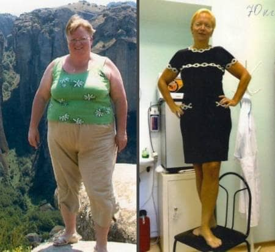
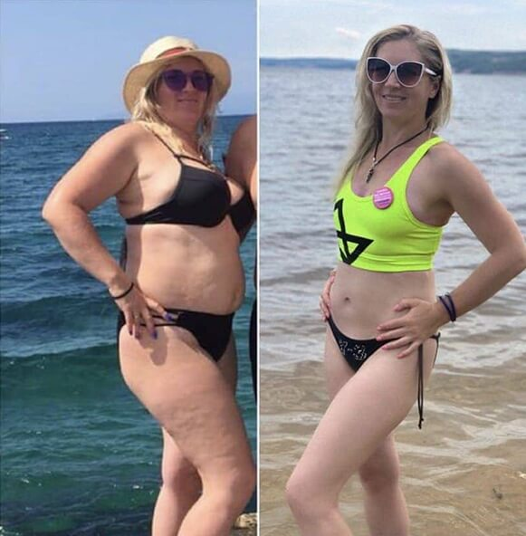

Ich habe mir jetzt den Vexilona-Kurs bestellt. In letzter Zeit habe wirklich viel zugenommen, Diäten und Sport halfen nicht, ich wiege schon über 95 kg. ich muss einfach schnell etwas dagegen tun. Hoffentlich funktioniert dieser Vexilona!
Ernährungswissenschaftler unter Schock! Eine Studentin aus Berlin hat eine einzigartige Formel entwickelt, die das Gewicht reduziert OHNE Diät und Sport!
Aber große Pharmaunternehmen wollen nicht, dass Sie es wissen!
Alicia ist die beste Medizinstudentin der Berliner Universität. In 2 Monaten gelang es dieser jungen Frau, mithilfe Ihrer Erfindung mehr als 30 kg abzunehmen! Und das Beste daran: Sie hat weder Diät gemacht noch Sport gemacht! Wie sie es gemacht hat – lesen Sie den Artikel.
Alicia ist seit ihrer Kindheit übergewichtig. die junge Frau wollte schon immer abnehmen, doch während sie bei ihren Eltern lebte, gelang ihr dies nicht: Alicias Mutter war ebenfalls übergewichtig und ernährte ihre Tochter von Kindheit an mit selbstgebackenen Kuchen, fetthaltigen Lebensmitteln und Schokolade. „So zeigte sie ihre Liebe“, sagt Alicia.
Alicia spürte die Last der Fettleibigkeit auf sich: Es war ihr peinlich, auf Partys zu gehen, sie hatte fast keine Freunde, es gab Probleme in ihrem Privatleben. Versuche, durch Diät und Bewegung Gewicht zu verlieren, waren erfolglos. Dann beschloss Alicia, Ernährungsberaterin zu werden, um sich selbst und anderen zu helfen.
Nach dem Abitur ging Alicia an die medizinische Universität und entschied sich gezielt für die Fakultät der Ernahrung. Sie erkannte, dass ein übergewichtiger Ernährungsberater lächerlich war und niemand sie ernst nehmen wurde. Deswegen beschloss sie abzunehmen. Aber die Esssucht war stärker und sie konnte es nicht.
Während sie ihre Promotionsarbeit schrieb, stieß sie auf eine interessante Studie – eine Gruppe von Wissenschaftlern beschrieb natürliche Fatburner – es stellte sich heraus, dass es sich dabei um Beeren und einige exotische Früchte handelte. Darüber hinaus wurde festgestellt, dass diese Früchte Substanzen enthalten, die den Stoffwechsel regulieren und den Appetit kontrollieren können.
Alicia hat eine Liste dieser Früchte erstellt. Es blieb nur noch, Fruchtextrakte zu gewinnen und diese in bestimmten Anteilen zu mischen. Doch die Früchte doch die Früchte von der Liste in Deutschland zu finden, war nicht einfach. Alicia verzweifelte jedoch nicht: Sie konnte Trockenextrakte der gewünschten Früchte und Beeren aus Thailand und Kambodscha bestellen.
Alicia gelang es, Zugang zum Labor zu erhalten, und sie arbeitete ständig an ihrer Formel und experimentierte. Als die ersten Ergebnisse erzielt wurden, beschloss Alicia, die Wirkung der Formel an sich selbst zu testen.
In nur 2 Monaten gelang es Alicia, 30 kg Übergewicht loszuwerden!
Später testete auch ihre 47-jährige Mutter – und wieder war das Ergebnis sehr positiv ausgefallen: sie nahm nicht nur 20 kg ab, sondern ging ihr physisch und mental viel besser, keine Gelenkbeschwerden, ihr Blutdruck stabilisierte und sie fühlte sich attraktiver
Die junge Frau wollte ihr Mittel patentieren lassen, wurde jedoch mangels klinischer Studien abgelehnt. Dann wandte sich Alicia an die Abteilung, um ihr bei der Organisation der Suche zu helfen, wurde jedoch erneut abgelehnt. Ihre Forschungsarbeit wurde nicht ernst genommen.
„Ich war sehr genervt! Ich habe gesehen, dass meine Formel funktioniert, sie hat mir und meiner Mutter wirklich beim Abnehmen geholfen. Aber sie wollten nicht einmal auf mich hören.
Dann begann ich, Menschen in sozialen Netzwerken zur Teilnahme an dem Experiment einzuladen. 10 Personen antworteten auf meinen Anruf. Von diesen 10 Personen haben 8 ohne Diät und Sport mehr als 15 kg pro Monat verloren!
Damals war ich davon überzeugt, dass meine Formel ein Durchbruch beim Abnehmen war!“
Anschließend gelang es weiteren 28 Personen mit Hilfe der Alicia-Formel, Gewicht zu verlieren: Diese Personen schrieben ihr selbst und boten an, an dem Experiment teilzunehmen. Gerüchte über ein wunderbares Mittel, das den Appetit stillt und 400-500 Gramm Fett pro Tag verbrennt, verbreiteten sich schnell in ganz Berlin.
Verschiedene Forschungseinrichtungen interessierten sich für Alicias Entdeckung und wurden bald nach Berlin eingeladen, wo auf der Grundlage des Forschungsinstituts für Diätologie und Ernährung groß angelegte klinische Studien durchgeführt wurden, an denen mehr als 2.000 Probanden mit einem BMI von 25 und hoher teilnahmen.
Bisher wurde Alicia eingeladen, auf großen medizinischen Konferenzen im ganzen Land zu sprechen.
Unter der Leitung von Wissenschaftlern des Forschungsinstituts für Diätologie und Ernährung wurde auf der Grundlage der von Alicia entdeckten Formel ein Mittel geschaffen, das im Jahr 2024 als das wirksamste im Bereich der Gewichtsabnahme gilt.
Die klinischen Studien waren erfolgreich und jetzt wird Vexilona (patentierter Produktname) in den besten Kliniken der Welt zur Bekämpfung von Fettleibigkeit eingesetzt.
Übergewicht führt zu ernsthaften Gesundheitsproblemen, Komplexen und psychischen Problemen.
Die von Alicia erfundene Formel hat eine komplexe Wirkung auf den Körper:
-
Unterdrückt den Appetit
-
Stellt den Stoffwechsel wieder her
-
Fördert die Fettverbrennung
Alicias Formel bekämpft die Leptinresistenz und sendet Signale an Ihr Gehirn, dass Sie satt sind. Darüber hinaus aktiviert es Signale, um Ihren Stoffwechsel zu beschleunigen.
Leptin ist ein Hormon im Körper, das hilft, den Appetit zu regulieren. Dieses Hormon sendet Signale an Ihr Gehirn, mit dem Essen aufzuhören, wenn Ihr Körper mit der Nahrung zufrieden ist.
Aufgrund der „Leptinresistenz“ gelangt dieses Signal jedoch nicht zum Gehirn. Dadurch isst du mehr, auch wenn dein Körper genug Nahrung hat.
Was tun, wenn Sie einen langsamen Stoffwechsel haben oder Ihr Leben lang mit Übergewicht zu kämpfen haben?
Machen Sie sich keine Sorgen, auch wenn Ihr Stoffwechsel langsam ist. Auch wenn Sie Ihr ganzes Leben lang versucht haben, Gewicht zu verlieren. Oder auch, wenn Sie vor einer bevorstehenden Hochzeit oder Veranstaltung einfach nur abnehmen möchten.
Alicias leistungsstarker Fatburner macht genau das!
Nehmen wir zum Beispiel die 62—jährige Gabriella Legler.
Ihr ganzes Leben lang hatte sie mit einem langsamen Stoffwechsel zu kämpfen. Schon in jungen Jahren nahm sie leicht zu.
Als sie jedoch diese neue Methode zur Bekämpfung von Fettleibig ausprobierte, steigerte sich ihr Stoffwechsel um das Zehnfache! Jetzt kann sie fast alles essen, was sie will. Und bleibt fit!
Sehen Sie, wie sich Gabriella verändert hat und ein neues Leben begonnen hat, indem sie in 3 Monaten über 45 kg abgenommen hat!
Ein weiteres Beispiel von Sabrina Decker: Die junge Frau wollte zu ihrer Hochzeit unbedingt abnehmen und suchte nach einer schnell wirkende Lösung. Wie Sie sehen können, hat es bei ihr gut funktioniert und sie hat in einem Monat mehr als 10 kg verloren
Und Bianka, 45, war die meiste Zeit ihres Lebens übergewichtig. Sie hatte auch einen langsamen Stoffwechsel. Das von Alicia entwickelte Mittel half ihr, ihren Stoffwechsel anzukurbeln, und Bianka kann jetzt Größe M tragen!
Stellen Sie sich vor, Sie ziehen einen Hosenanzug oder ein Kleid, das seit Jahren nicht getragen wurde. Oder wie schlank Sie auf Ihren neuen Social-Media-Fotos aussehen.
Dieses innovative Tool wird Ihnen helfen, alle Ihre Träume vom Abnehmen wahr werden zu lassen!
Ihre Gewichtsprobleme sind nicht nur die Schuld an einer ungesunden Ernährung!
Alicia, eine ausgebildete Ernährungsexpertin, weiß, dass die Gewichtszunahme nicht nur Schuld für ungesunde Ernahrung ist. Und Ihr Gewicht kann vollständig kontrolliert und formbar sein.
Als Alicia sich eingehender mit ihren Nachforschungen beschäftigte, entdeckte sie einige schockierende Dinge.
In Deutschland gibt es große Pharmaunternehmen, die aus dem Ausland zu uns gekommen sind. Und sie finanzieren den Großteil der Forschung und Experimente berühmter Professoren und Wissenschaftlergruppen in den Forschungsinstituten unseres Landes. Die Gehälter der Professoren hängen von der Finanzierung durch große Unternehmen ab. Sie haben, wie Sie wissen, nichts mit Konkurrenten zu tun.
Alicia war frustriert und fragte sich immer, warum ihr Forschungsberater, ein bekannter und angesehener Professor, ein potenziell gefährliches und teures Medikament zur Gewichtsabnahme bewarb?
Und gleichzeitig unterbricht es die Entwicklung einer sicheren, wirtschaftlichen und wirksameren natürlichen Lösung für das Problem des Übergewichts.
Dank der Arbeit und Aktivität von Alicia, die nicht durch das Verbot von Wissenschaftlern des Forschungsinstituts für Diätetik unterbrochen wurde, können Sie die Vorteile eines neuen Schlankheitsprodukts selbst spüren.
Alicia behauptet, dass:
Vexilona ist das neueste und beste Produkt zur Gewichtsreduzierung, das Sie jemals brauchen werden!
Sie werden nie wieder Schlankheitspräparate, Diäten oder Sport brauchen. Warum? Seine fettabbauende Formel ist heute für jedermann erhältlich. Und es kann Ihnen helfen, in 30 Tagen bis zu 16 kg abzunehmen! Im Gegensatz zu den meisten Abnehmprodukten fördert diese Methode eine nachhaltige Gewichtsabnahme. Sie werden in der Lage sein, das erreichte Ergebnis für lange Zeit beizubehalten!
Alicia möchte mit Ihren Produkt erreichen, dass Menschen mit Übergewicht, ein langes und gesundes Leben führen konnen
Alicia hat selbst erlebt und weißt, wie schwierig es ist, Gewicht in der Norm zu halten. Sie hat in ihrem Leben verschiedene Wege ausprobiert: Diäten, Sport, Schwimmen, diverse Schlankheitsmacher und jetzt muss sie feststellen, dass nichts davon wirklich geholfen hat.
Seien Sie jetzt sicher, dass Sie SCHNELL, SICHER UND EINFACH abnehmen können!
Sie werden schon bald selbst Ergebnisse sehen!
Sie müssen nicht auf das Essen achten. Geniesen Sie es. Der schneller Stoffwechsel wird verhindert, dass die Kalorien in Fett umwandeln.
Und es ist nicht notwendig, sich in Fitnessstudio kaputt zu schwitzen, Fett verbrennt ohne körperliche Anstrengung!
Das wahre Wundermittel gegen Kalorien ist jetzt in greifbarer Nahe!
„Diese Pflanzen wuchsen still auf der Erde und warteten darauf, dass jemand ihre Anwesenheit endlich bemerkte. Es reichte aus, sie zu kombinieren und ihnen zu ermöglichen, auf den menschlichen Körper einzuwirken “, sagt Alicia.
Unzählige Personen, sowohl Frauen als auch Männer im Alter von 18 bis 78 Jahren, haben das von Alicia Blacker erfundene Schlankheitsprodukt angewendet.
Alle haben erfolgreich abgenommen und bleiben immer noch auf ihrem optimalen Gewicht.
„Überschüssiges Fett zu verbrennen auf natürliche Art und Weise, ohne das Risiko von Jo-Jo-Effekt auf den Körper“, erklärt Alicia.
Die Forschungsergebnisse sprechen für sich. Dank der einzigartigen Entwicklung:
-
Extrakte aus Kräutern und Früchten ermöglichen eine natürliche Gewichtsreduktion von bis zu 4kg pro Woche, abhängig von Ihrem Ausgangsgewicht.
-
Sie müssen sich nicht mit Diäten und Workouts quälen, denn mit dieser Methode zum Abnehmen müssen Sie nicht die Kalorien zählen, hungern oder zu hart trainieren.
-
Ein normaler Body-Mass-Index minimiert das Risiko schwerer Krankheiten: Arteriosklerose, Diabetes, Arthrose, Herzinfarkt, Schlaganfall oder Herzinfarkt.
-
Sie werden nach der Stillzeit nicht wieder an Übergewicht leiden, da sich Ihr Stoffwechsel stabilisiert. Nehmen Sie so viele Kalorien zu sich, wie Sie verbrauchen, und essen Sie nicht zu viel.
-
5-mal mehr Energie und Muskelkraft. Erhöht die Serotoninproduktion, verbessert die Stimmung und erhöht die Lebensspanne.
Warum ist dies der einfachste Weg, Gewicht zu verlieren?
Nehmen Sie einfach zweimal täglich 20 Tropfen eine halbe Stunde vor den Mahlzeiten in einem Glas Wasser aufgelöst ein, um Gewicht zu verlieren! Keine Diät oder Training notwendig!
-
Ohne Kalorienzählen und strenge Diäten.
-
Kein hartes Training.
DURCHSCHNITTLICHER GEWICHTSVERLUST – STRENGE DIÄT UND SPORT GEGEN
Vexilona
Prozentsatz der Personen, die am Experiment teilgenommen haben
Vexilona
Sport
Diät
92 % der Studienteilnehmer, die Vexilona einnahmen , verloren in zwei Monaten mehr als 25 kg, während dies mit herkömmlichen Methoden zur Gewichtsreduktion nur 8 % der Menschen erreichten.
NOTIZ.
Vexilona Testteilnehmer durften verschiedene Nahrung zu sich nehmen. Keine große Einschränkungen hinsichtlich Menge oder Art der Lebensmittel.
Stellen Sie sich vor: Sie können all das Essen genießen, das Sie lieben. Sie müssen nicht trainieren, um den Körper Ihrer Träume zu bekommen!
Besteht die Gefahr einer erneuten Gewichtszunahme?
Alicia sagt: „Da es nicht wie bei einer herkömmlichen Diät funktioniert, besteht keine Gefahr, nach der Kur rasch viel zuzunehmen!“
Jetzt möchten Sie es wahrscheinlich wissen.
Vexilona sicher?
Da Vexilona eine völlig natürliche Zusammensetzung hat, ist es absolut gesundheitlich unbedenklich. Darüber hinaus ist es sehr nützlich für den Körper!
Vexilona ist ein 100 % natürliches exotisches Kräuter- und
Fruchtkonzentrat, dass eine VOLLSTÄNDIGE LISTE von Fatburner enthält, darunter:
Acai-Beeren und Kaktusfeige, reich an Ballaststoffen, um die Verdauung zu verbessern und den
Appetit zu reduzieren; Garcinia Cambogia (Malabar Tamarinde) mit Hydroxylimonsaure zur
Appetitunterdruckung und Blockierung der Fettsynthese; Safran zur Reduzierung emotionaler
Überernährung; Mangostan mit Antioxidantien zur Verbesserung des Stoffwechsel. Vitamine B1, B6
und B12 fördern den Stoffwechsel und die Umwandlung von Nahrung in Energie und verbessern so die
allgemeine Gesundheit des Körpers.
Die Formel von Alicia ist jetzt in Form von Tropfen erhältlich, die zweimal täglich mit einem Glas Wasser eingenommen werden: In dieser Form werden die Wirkstoffe besser durch den Verdauungstrakt aufgenommen und vollständig assimiliert.
Bei der Einnahme zersetzen die Wirkstoffe von
Aber das ist noch nicht alles.
Das Mittel trägt nicht nur zur schnellen Fettverbrennung bei, sondern versorgt den Körper auch mit wichtigen Vitaminen und Nährstoffen!
In Form von Tropfen erhältlich, zieht es schnell in Magen und Darm ein, hemmt das Hungergefühl und baut Fette im Körper ab.
Eine Gewichtsabnahme von bis 4 kg pro Woche ist auf die Beschleunigung der natürlichen Prozesse des Körpers zurückzuführen. Sie müssen sich also nicht mit anstrengenden Übungen und einer strengen Diät quälen.
So funktioniert Vexilona :
-
In den ersten 5-7 Tagen schwindet das überschüssige Wasser aus dem Körper. Es kommt zu einer Abschwellung, der Prozess beginnt. Das Gewicht wird um 2.5 - 4 kg reduziert.
-
6-12 Tage – Beschleunigung des Stoffwechsels. Der Körper nimmt zwar die Nahrung vollständig auf und gleichzeitig beginnt er, die Fettreserven intensiver zu nutzen.
-
Nach 10-18 – die aktive Phase der Lipolyse. Der Prozess, bei dem Fettgewebe verbrennt und dessen Umwandlung in Energie beginnt. Sie fühlen sich deutlich fitter als sonst.
-
Tag 21-26 – Reinigung von Giftstoffen. Normalisierung des Verdauungstraktes. Zu diesem Zeitpunkt verlieren die Menschen durchschnittlich 10-12 kg
-
Ab Tag 29 verbrennen Sie viszerales Fett. Fett kommt aus den inneren Organen. Der Magen wird kleiner, das Wohlbefinden verbessert sich deutlich.
Alicias schrittweise Ergebnisse zur Gewichtsabnahme
Alicia hat all diese harte Arbeit geleistet, weil es ihr am Herzen liegt.
Und weil Alicia's Herzensprojekt ist, hat sie dieses Produkt erfolgreich an sich selbst getestet und möchte, dass mehr Menschen von Vexilona profitieren.
Beantworten Sie 3 Fragen und erhalten Sie Vexilona
MIT 50 % RABATT!
Füllen Sie die Felder unten aus und klicken Sie auf „Jetzt bestellen“
1. Wie viele Kilo möchten Sie abnehmen?
2. Welche Körperteile benötigen eine Korrektur?
3. Dein Alter?
Die Aktion endet am:
10 :
00
1
2
3

Annemarie Hirte
9.08.2024

Fernanda Hasz
10.08.2024
Mein Paket ist endlich angekommen! Ich habe alles sehr schnell und übersichtlich bei der Post erhalten und nachträglich bezahlt. Wie sehr ich mich auf die Ergebnisse freue! Ich würde es jetzt schon gerne sehen.

Ida Benz
12.08.2024
Interessanter Artikel! Aber es ist immer noch unklar, wie es funktioniert.

Helene Oehrlein
13.08.2024
Hier geht es darum, dass der Stoffwechsel schneller wird. Das heißt, man nimmt Kohlenhydrate vollständig auf, ohne sie zu speichern, man hat keinen Appetit mehr, der Körper beginnt, zuerst Energie aus alten Fettreserven zu gewinnen und dann aus den inneren Organen. Vexilona ist ein großartiges Mittel zur Bekämpfung von viszeralem Fett. Es hat mir sehr geholfen!

Janina Schopf
14.08.2024
Alles ok, aber ich verstehe nicht, warum es nicht in Apotheken zu kaufen ist?

Hilde Seemann
16.08.2024
Sie haben den Artikel wahrscheinlich nicht richtig gelesen! Für Apotheken ist es nicht profitable, Vexilona zu verkaufen. Es ist besser, wenn Sie Ihnen alles Mögliche an Pillen gegen Blutdruck & Co. verkaufen. Ich denke, dass nach so einer Geschichte irgendwann mal das Vexilona in den Apotheken zu finden sein wird.

Grace Cimino
17.08.2024
Oh!! Vexilona meins! Ich liebe ihn sehr. Ich konnte es lange Zeit nirgendwo finden, einmal gab mir ein Spezialist einen Link zur Bestellung, aber ich habe ihn verloren ((Vielen Dank für diesen interessanten Artikel. Der Test bestanden, ich habe einen Rabatt bekommen!)

Hildreth Hinsch
19.08.2024
Es ist sehr bequem zu nehmen: zweimal täglich mit einem Glas Wasser vor den Mahlzeiten (ich habe gerade erst angefangen, aber ich sehe bereits die Ergebnisse). Ich habe mehrere Fragen beantwortet und einen Rabatt bekommen! Alles ist richtig. Und man sieht sofort, dass die Vorgehensweise gut und gründlich ist. Da sie auch Umfragen durchführen, ist es ihnen wirklich wichtig, dass die Menschen Ergebnisse erhalten. Bravo!


Isa Zens
21.08.2024
Ich habe die Fragen ehrlich beantwortet und einen fairen Preis dafür bekommen, danke!

Hulde Niebauer
22.08.2024
Und ich habe 50 % Rabatt bekommen, juhu!
Eartha Herbel
23.08.2024
Ich begann mit der Einnahme dieser Tropfen, hab gegessen was mir schmeckte und nahm gleichzeitig 9 kg ab. Ich glaube, dass Vexilona das beste Mittel zum Abnehmen ist, das ich je getroffen habe, und dass es das Beste ist, statt sich im Fitnessstudio zu ackern, dafür habe ich weder Zeit noch Lust. Diese Losung ist perfekt für Leute wie mich! Ich empfehle!
Renard Glaser
23.08.2024
Bevor ich den Vexilona benutzte, wog ich satte 106 kg. Fruher war ich immer schlank aber mit zunehmendem Alter zeigte sich der Bauch und der Rest wurde schlabbriger. Mit 35 wurde mir klar, dass ich mich dringend etwas ändern musste. Ich habe mich fast ein Jahr lang dem Training gequält, aber ich konnte meine normale Form nicht erreichen. Dann entdeckte ich zufällig Vexilona und verwandelte mich buchstäblich innerhalb weniger Monaten in die Person, die ich immer im Spiegel sehen wollte. Jetzt kümmere ich mich um meine Figur und der Vexilona steht immer in der Nähe.
Mathilda Vogler
24.08.2024
Vexilona hat bei mir auch gut funktioniert. Jetzt kann ich essen, was ich will und gebe damit an fast 13 kg in 6 Wochen. Ich mache im gleichen Sinne weiter

Theresa Weiss
25.08.2024
Ich habe versucht, mit dem Essen aufzuhören, aber der innere Schweinehund ist stärker. Ist es wirklich möglich, sich zu beherrschen und einfach nicht zu essen?

Adela Thering
26.08.2024
Theresa, ja, ich esse fast nichts, aber es hilft nicht. Naja, ich esse fast alles, aber trotzdem bleibt das Gewicht intakt.
Emestine Fenzel
27.08.2024
Ich war überrascht, dass Sie schreiben, dass nur Ernährungswissenschaftler und Endokrinologen etwas über Vexilona wissen. Ich nehme es nun seit 2 Jahren regelmäßig. Als ich anfing, es zu trinken, habe ich zunächst 14 kg abgenommen, und jetzt ist dies nur zur Vorbeugung und zur Vitaminzufuhr ein natürliches Pflanzenkonzentrat. Meine Freunde kennen ihn übrigens auch schon lange, das ist also nicht nur dein Geheimnis)) FOTOS VORHER UND NACHHER

Otilie Fass
28.08.2024
Warum sollte jeder den gleichen Standard haben? Warum müssen alle dünn sein? Ich wiege zum Beispiel 79 kg bei einer Körpergröße von 167 und schäme mich dafür nicht. Ich liebe es, wie ich großartig aussehe und mich großartig fühle!

Cheryl Clauer
29.08.2024
Manno! Ich muss dringend 9 kg abnehmen! War 6 Monate aufgrund einer schweren Knieoperation nur zu Hause, konnte ich mich nicht richtig bewegen und stopfte aus Frust in mich hinein. Was soll ich tun!!?? Hilfe! Ich kann eine Diät nicht durchhalten, ich habe keine Willenskraft und das Fitnessstudio ist auch nichts für mich, aus gesundheitlichen Gründen.

Leoda Ringold
30.08.2024
Vielen Dank an alle, die Bewertungen schreiben und Fotos zeigen! Ihre Ergebnisse geben Anlass zur Hoffnung! Ich möchte mich wirklich ändern, und viele Jahre lang ist daraus nichts geworden. Was ich an Gewicht verliere, kommt genauso viel zuruck.

Wilda Gretzinger
1.09.2024
Ich habe mir auch die Vorher-Nachher-Fotos angesehen. Das ist sehr schön! Ich kann es kaum erwarten, denselben Kommentar zu posten. Im Moment packe ich gerade mein Paket aus.

Adolphe Gotthard
2.09.2024
Kann ich allein durch diesen Test einen Rabatt auf den Vexilona bekommen? Wird es noch in irgendwelchen Online-Shops verkauft?

Herrman Uwe
2.09.2024
Meine Frau hat auch Schwierigkeiten mit dem Gewicht. Früher wog sie 60 kg, jetzt 97. Sie beschwert sich andauernd über Luftknappheit und wie schwer es ihr fällt, die Treppe hoch zu laufen. Das traurige daran, dass sie es nicht wahrhaben will und sich damit abgefunden hat

Marisa Pfeil
3.09.2024
Also mein Mann und ich nehmen schon seit langer Zeit Vexilona. Früher hatten wir ähnliche Probleme mit dem Gewicht, aber jetzt denken wir nicht einmal darüber nach, wir genießen unser leben in vollen Zügen

Ordella Reek
3.09.2024
Schön, wenn es tatsächlich funktioniert. Auch wenn ich skeptisch bin. Und ich kann aufgrund der Tabletten mit Chemie mehr glauben als durch jeden natürlichen Extrakt. Aber was auch immer Sie der Figur zuliebe tun, ich werde mein Glück versuchen, einen Rabatt zu bekommen, solange es eine solche Möglichkeit gibt!
Adelheid Scheibe
5.09.2024
Gewicht 97 kg. Ich weis nicht, wie ich das loswerden kann und möchte nicht über 100 gehen. Was soll ich tun!? Ist es möglich, dieses Vexilona in der Apotheke zu finden?
Holle Otto
6.09.2024
Natürlich können Sie es versuchen, aber es ist besser, hier zu bestellen, sogar mit 50 % Rabatt.
Odila Rosacker
7.09.2024
Hallo zusammen, ich habe mit Vexilona auch abgenommen. Ehrlich gesagt habe ich nie von einem solchen Ergebnis geträumt! Ich dachte mir, das sei alles Unsinn und ich wollte nicht damit anfangen, aber meine Schwester überzeugte mich, es zu versuchen. Wir haben gemeinsam sortiert und abgenommen. Ich habe es geschafft, in anderthalb Monaten 14 kg abzunehmen, meine Schwester hat 10 verloren, aber am Anfang hatte sie weniger Gewicht. Jetzt hat sich das Gewicht stabilisiert und verändert sich nicht! Zu sagen, dass ich glücklich bin, ist eine Untertreibung!! :))) Ich empfehle jedem, es auszuprobieren! In mindestens 2 Wochen werden Sie das Ergebnis sehen!

Luana Welle
7.09.2024
Alles der Frage der Einstellung, wenn du abnehmen willst, schaffst du’s)))
Mindy Eschenbacher
7.09.2024
Mädels, hört niemandem zu, dass ihr keinen Erfolg haben werdet oder es nicht schaffen werdet. Ich tat es! Und Sie können es auch tun! Ich empfehle Vexilona jedem, nur er hat geholfen.

Adelaide Duren
8.09.2024
Ein wirklich super Produkt! Ich habe damals mit Angebot bestellt. Nach einem Monat habe ich 11 kg abgenommen und seitdem fühle ich mich wesentlich attraktiver.
Nadette Kimmerle
9.09.2024
Ich habe die Fragen beantwortet und einen Rabatt bekommen. Es stellte sich als sehr profitabel heraus. Ich bin zufrieden – 4 kg sind in der ersten Woche verdunstet

Warda Setzer
11.09.2024
Ich habe mein ganzes Leben lang mit Übergewicht und Depressionen zu kämpfen. Es gab Zeiten, in denen ich alles aufgeben wollte. Ich habe es nicht wirklich geglaubt, aber das Ergebnis war überraschend: 50 Tage und 18 kg weniger! Gleichzeitig bin ich voller Energie und Freude. Ich möchte die Kur unbedingt wiederholen!!

Elyse Letterman
11.09.2024
Vexilona funktioniert! Ich hörte auf, unkontrolliert zu essen und nahm tatsächlich 12 kg ab. Ich mache weiter.

Lind Berl
12.09.2024
Ich habe bestellt, obwohl es eine so lukrative Aktion war, ich kann es kaum erwarten, bis das Paket ankommt. Ich arbeite seit zwei Jahren im Schichtdienst und mein Stoffwechsel ist zum Stillstand gekommen. Ich habe 17 kg zugenommen und nichts lässt mich davon los. Ich hoffe, dieses Pulver hilft.
Lurleen Bergt
14.09.2024
Ich habe heute meinen Kurs erhalten! Ich freue mich auf morgen, ich fange morgen früh an. Ich habe bereits ein Foto gemacht, um es später zu zeigen.

Evony-Wurm
15.09.2024
Mädels, nehmt es, zögert nicht. Ich selbst habe mit Vexilona abgenommen und bestelle jetzt auch meine Freunde für eine Aktion. Ich hasse Diäten und mache mich immer schlecht, aber hier leben wir wie gewohnt und der Körper verändert sich zum Besseren!

Linda Bohnsack
17.09.2024
Danke für den Artikel! Das ist es, was ich brauche. Ich habe eine Anfrage hinterlassen und freue mich sehr auf den Anruf. Wer weiß, wie lange es dauern wird, bis wir nach Como kommen?
Louise Schleyer
17.09.2024
Mir wurde vor 2 Monaten dieses Produkt empfohlen und habe die Kur durch. Ich muss sagen, es hat sich gelohnt, die Ergebnisse gefallen mir wirklich gut!
Maddalen Deutschland
18.09.2024
Super! Ich benutze es nun schon den zweiten Tag, habe aber bisher nur gemerkt, dass ich ruhiger geworden bin, mein Appetit nachgelassen hat und ich kein Verlangen mehr nach Süßigkeiten habe. Tolle Stimmung. Ich denke, alles läuft wie es soll!

Adeline Kruck
19.09.2024
Gut gemacht, Alicia! Und sie hat sich verbessert und anderen geholfen!

Magnilde Ganz
19.09.2024
Ich hatte das Glück, die Aktion zu rezensieren! Ich habe den Test bestanden und einen Rabatt bekommen. Guten Tag)))

Irmuska Kienbaum
21.09.2024
Meine Tochter hat mir geraten, dieses Produkt auszuprobieren, es enthält viele aktive Stoffe. Sie verlor nach der Stillzeit an Gewicht, bereits 7 kilo runter.

Ethelinde Neuberger
23.09.2024
Danke, ich habe Interesse, ich bestelle es auch selbst, während der Aktion.